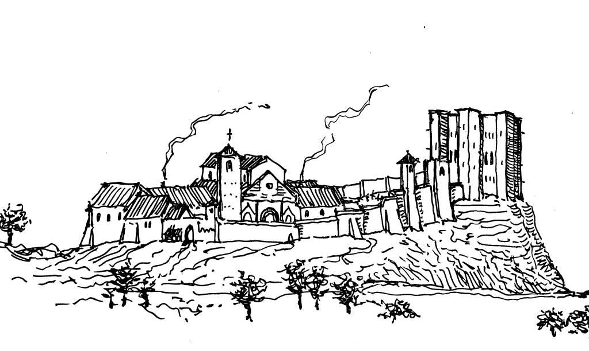
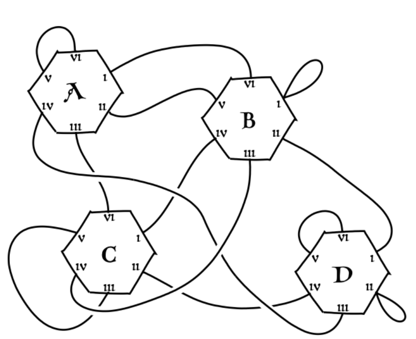

参加者の課題は、迷宮のような図書館の地図を作成することです。これは、複数回の探索遠征を通じて情報を収集することで達成されます。これはバージョン1.0です - 詳細は課題ページの変更履歴をご覧ください。
物語の登場人物であるアドソとウィリアムは、エーディフィウム（建築群）内にある図書館に出会い、その秘密を解明しようと試みます。
 ミルナー家のアドソとその師であるバッカスのウィリアムは、ついに世界最高峰の修道院「聖クリーネ修道院」に到着しました。ここは評価の聖なる秩序に属する修道士たちが管理する、世界的に有名な「ラムダの図書館」の所在地であり、この世に存在するすべての関数が収められていると言われています。
図書館はエーディフィウムの大部分を占めています。それは巨大で威厳に満ちた、要塞のような建物で、夕日に照らされた回廊の上に長い影を落としています。 図書館は院長とその司書であるカリーのアロンゾによって厳重に管理されているため、ウィリアムとアドソは国際関数型プログラミング会議で修道士・修道女が忙しくしている隙を見計らって、巧妙な手段でエーディフィウムに侵入し、ようやく図書館にアクセスできるのです。
エーディフィウムは広大な建造物であり、そのすべての部屋や通路の構造を把握しているのは、カリーのアロンゾ修道院長と修道院長だけです。中にはこの図書館には呪いがかけられており、許可なく入った者は二度と出口を見つけられないと言う者もいます。 ウィリアムは優れた直感力と論理力を持つ学者であり、このような迷信を一蹴し、図書館の秘密を解明するという決意を固くしています。彼は師であるヒルベルトの言葉を引用するように、「我々は知らねばならない、必ず知るだろう！」と断言します。
常に懐疑的で確信が持てないアドソは、師であるウィリアムに尋ねます。「司書の案内なしで、どうやって進むべき道を判断すればよいのでしょうか？地図さえ持っていないのに！」
ウィリアムは目の奥に狡猾な光を宿しながら答えます。「さて、親愛なるアドソ君、自分たちで地図を作るしかありませんね」
図書館の構造と、ウィリアムとアドソが取り組むべき課題の性質について説明します。
The Ædificium は、六角形の部屋が複数集まった構造をしており、各辺には1から6までの番号が記された扉があります。各扉の先には別室へと続く通路が存在します。部屋自体にもラベルが貼られていますが、その表記はアドソが読めない言語で書かれています。 ウィリアムはその言語を理解していますが、視力が衰えているため、ラベルの最初の2ビットしか判別できません。同じラベルが複数の部屋に付けられている場合もあります。通路によっては、出発した部屋や同じドアに戻ってくることもあります。

道に迷わないために、アドソとウィリアムは図書館に入る前に<ルート計画>を策定しなければなりません。ルート計画とは、0から5までの数字の連続から構成され、最初の部屋からスタートして通過する予定の扉の順序を示します。すべてのルート計画は必ず同じ部屋から開始します。
ルートプランに従って図書館内を移動しながら、アドソはウィリアムが各部屋のラベルから読み取った2ビット整数を記録します。したがって、長さxのルートプランを実行した後、アドソはx個の2ビット整数からなる記録を得ることになります。
アドソとウィリアムに課せられた課題は、図書館内の正確な地図（無向グラフ形式）を作成するために必要な情報を得るため、可能な限り少ない回数の探索で一連の経路計画を立案することです。
ルート計画とAdsoの記録のフォーマット仕様、および地図の表示形式が規定されています。
Query は、以下のURLのサーバーに対してHTTPリクエストを送信することでÆdificiumに問い合わせを行います：
POST /register 新規チームの登録を行います。
リクエストボディ:
{
"name": string,
"pl": string,
"email": string
}レスポンスボディ:
{
"id": string
}応答に含まれるidは機密情報であり、今後のリクエストでチームを識別するために使用されます。このIDは記憶しておいてくださいが、決して公開しないでください！
POST /select 解決すべき問題を選択します。
リクエストボディ:
{
"id": string,
"problemName": string,
}レスポンスボディ:
{
"problemName": string
}idは/registerで生成された文字列と完全に一致している必要があります。problemNameは利用可能な問題のいずれかを指定できます。利用可能な問題の完全なリストは、リーダーボードページで確認できます。 各問題にはあらかじめ設定された部屋数がありますが、問題を選択するたびにマップの正確なレイアウトはランダムに生成されます。
テスト目的の場合、手動で解ける程度の小規模な3部屋の迷宮も、問題名"probatio"を使用して選択できます。
注意：既に問題が選択されている状態で /select に POST すると、
現在の問題は破棄され、新たに解決すべき問題が生成されます。
POST /explore エーディフィウム（建造物）を探索します。
リクエストボディ:
{
"id": string,
"plans": [string],
}レスポンスボディ:
{
"results": [[int]],
"queryCount": int
}/select で問題を選択した後、/explore には POST メソッドでのみアクセスしてください。
id は、/register によって生成される文字列と完全に一致している必要があります。plans フィールドには、各ルート計画を表す数字の文字列リストを含める必要があります（各文字列は 0 から 5 までの数字で構成され、通過すべき各ドアの番号を指定します）。 例えば、文字列 "0325" は、ドア0、次にドア3、続いてドア2、最後にドア5の順に進入する経路計画を表します。
resultsフィールドには、提出された各ルートプランに対応するアドソの記録がリスト形式で格納されています。各記録は、ウィリアムが各部屋に入った際に観測した2ビット整数値のリストです。 queryCount フィールドには、これまでにÆdificiumに対して行われた探検の総数が記録されています。AdsoとWilliamは図書館への探検回数を最小限に抑えたいと考えているため、queryCount値が低い推測ほどリーダーボードで上位に表示されます。
注記: 単一のHTTPリクエストで複数のルートプランを送信することを許可しています。これによりサーバーコストを削減できるため、参加者がルートプランをまとめて送信するよう促すため、/exploreリクエストごとに追加の1ポイント分のqueryCountペナルティが適用されます。
POST /guess 候補となる地図データを送信します。
リクエストボディ:
{
"id": string,
"map": {
"rooms": [int],
"startingRoom": int,
"connections": [
{
"from": {
"room": int,
"door": int
},
"to": {
"room": int,
"door": int
}
}
]
}
}レスポンスボディ:
{
"correct": boolean
}/select で問題を選択した後、/guess へのPOSTリクエストのみ送信してください。
id は、/register で生成された文字列と完全に一致している必要があります。map フィールドには、図書館のレイアウトに関する説明が記載されています。この説明の rooms フィールドは、ウィリアムが各部屋ごとに読み取った2ビット整数ラベルのリストです。部屋はこのリストのインデックスによって識別されます。 startingRoom フィールドは初期部屋のインデックスを指定します。connections フィールドには、各部屋の接続方法を定義するオブジェクトのリストが含まれており、room フィールドは部屋のインデックスを、door フィールドはドア番号（0～5）をそれぞれ指定します。 注意：構築されるグラフは無向グラフです。例えば、部屋5のドア3から部屋2のドア0への接続が既に存在する場合、部屋2のドア0から部屋5のドア3への接続を新たに定義する必要はありません。この接続は自動的に存在することになります。
correct フィールドは、提出された地図が /select コマンド実行時に生成された地図と等価である場合にのみ true となります。 「同等」とは、以下の条件を満たすことを意味します：
・部屋の数が同一であること
・いかなる経路計画によっても区別できないこと ― 同じサイズの2つの地図間に違いを示す経路計画が存在しない場合、それらは同等とみなされます。
正しい地図が提出された場合、チームのqueryCountが現在選択されている問題に対するこれまでのスコアを上回っている場合、スコアが更新されます。
提出されたマップが正解であるか否かにかかわらず、問題は選択解除され、/guessコマンドが実行されるとライブラリがクリアされます。つまり、もしあなたの推測が間違っていた場合、/selectコマンドを使って新しいマップからやり直す必要があります。
ここには、提出作品の評価基準と、グローバルスコアボードへの参照情報が記載されています。
G採点基準は、正解マップが生成される際の 効率性に基づいています。具体的には、グラフを生成するために必要な遠征回数が評価対象となります。
各チームは、各問題ごとにローカルリーダーボード上で順位付けされます。正解マップを最も少ない遠征回数で生成したチームが1位となり、その問題に対してまだ正解を提出していないチームはすべて同率で最下位となります。
グローバルリーダーボードは、昨年のコンテストと同様のボルダ投票方式で算出されます。各問題について、各チームは他のすべてのチームと比較して順位が下位であればあるほど多くのポイントを獲得します（厳密に下位のチーム数に応じてポイントが付与されます）。 すべての問題を通じて最も多くのポイントを獲得したチームがグローバルリーダーボードで1位となります。このシステムの重要な特徴は、個々の問題における絶対的なスコアは重要ではなく、相対的な順位のみが考慮されるという点です。
リーダーボードはコンテスト期間中、数分おきに更新されますが、ライトニングラウンド終了の2時間前とコンテスト最後の2時間は一時的に更新を停止し、緊張感を高める演出が行われます。
本コンテストへの参加方法および作品提出手順、および作品提出が可能な期間について説明します。
To 賞品の選考対象となるには、チームはコードを提出する必要があります。これは以下のGoogleフォームを使用して行います。
/register で取得したidと、コードにアクセス可能なURL（例：Gitリポジトリ）を必ず記載してください。コンテスト終了まではコードを公開しないようご注意ください。
このフォームはコンテスト終了時刻から3時間後に締め切られます。ライトニングラウンド用の提出は個別に行う必要はありませんが、どの部分が最初の24時間分の成果であるかを明記したREADMEファイルを必ず添付してください。
なお、「審査員特別賞」も授与されますので、スコアボードで上位にランクインしていなくても受賞の可能性はあります（ただし、これが受賞するための推奨方法です）。